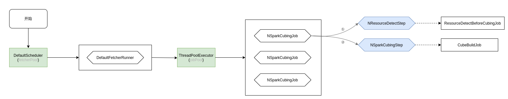

Ch04-Kylin 之 Cube 构建流程
June 17, 2021
Kylin Cube 执行流程
1. Cube 构建调度流程 #
Cube 的构建流程如下所示：
NSparkCubingJob 中有个非常重要的方法create，该方法将构建 cube 的两个阶段NResourceDetectStep和NSparkCubingStep封装成 Job，并添加到了 kylin 维护的线程池中，依次执行。
注意 上图中的
addTask()和下图中的getTasks()这两个方法操作的是同一个 queue，因为NSparkCubingJob是DefaultChainedExecutable的子类，并且NSparkCubingJob并没有单独覆盖其方法。
为了更加清晰的阐述这件事情，这里使用流程图来描述，如下图所示：

在项目启动的时候，会初始化一个定时线程池 (fetchPool)，接着该线程池又会添加一个定长 (kylin.job.max-concurrent-jobs) 的线程池 (jobPool)。jobPool 中可以执行多个NSparkCubingJob，每个NSparkCubingJob包含了NResourceDetectStep和NSparkCubingStep两个阶段。
至此，也就能够明白 cube 整体调度流程了，fetchPool 周期性调度 jobPool，jobPool 中如果有 job，那么就会被调起来执行。
2. ResourceDetectBeforeCubingJob #
这一步的目的对 cube 的配置预处理，方便生成cubing_detect_items.json，resource_paths.json，count_distinct.json这三个文件，以供实际构建 cube 时使用。
2.2 文件目录 #
bin/hdfs dfs -ls /kylin/kylin_metadata/project_demo/job_tmp/5f824eb0-3124-4d02-a722-2ddaddd9eefd/share
Found 3 items
-rw-r--r-- 1 li supergroup 12 2021-07-05 22:27 /kylin/kylin_metadata/project_demo/job_tmp/5f824eb0-3124-4d02-a722-2ddaddd9eefd/share/72023e32-05cd-9c65-c6d5-19f106f4dfbb_cubing_detect_items.json
-rw-r--r-- 1 li supergroup 133 2021-07-05 22:27 /kylin/kylin_metadata/project_demo/job_tmp/5f824eb0-3124-4d02-a722-2ddaddd9eefd/share/72023e32-05cd-9c65-c6d5-19f106f4dfbb_resource_paths.json
-rw-r--r-- 1 li supergroup 9 2021-07-05 22:27 /kylin/kylin_metadata/project_demo/job_tmp/5f824eb0-3124-4d02-a722-2ddaddd9eefd/share/count_distinct.json
2.2.1 cubing_detect_items.json #
key 值是 layout id，value 是 task 总数（根据 rdd 的依赖关系统计而来）
{
"-1": 2
}
2.2.2 resource_paths.json #
key 值是 layout id，value 是表数据地址
{
"-1": [
"hdfs://localhost:9000/user/hive/warehouse/demo.db/t_student",
"hdfs://localhost:9000/user/hive/warehouse/demo.db/t_part"
]
}
2.2.3 count_distinct.json #
度量中是否有选择 count distinct
false
2.3 Spark 命令 #
#1 Step Name: Detect Resource
job.NSparkExecutable:377 : spark submit cmd:
export HADOOP_CONF_DIR=/home/li/Software/apache-kylin-4.0.0-beta-bin/hadoop_conf && /home/li/Software/apache-kylin-4.0.0-beta-bin/spark/bin/spark-submit
--class org.apache.kylin.engine.spark.application.SparkEntry
--conf 'spark.yarn.queue=default'
--conf 'spark.history.fs.logDirectory=hdfs:///kylin/spark-history'
--conf 'spark.master=local'
--conf 'spark.hadoop.yarn.timeline-service.enabled=false'
--conf 'spark.driver.cores=1'
--conf 'spark.eventLog.enabled=true'
--conf 'spark.eventLog.dir=hdfs:///kylin/spark-history'
--conf 'spark.driver.memory=1G'
--conf 'spark.shuffle.service.enabled=true'
--conf 'spark.driver.extraJavaOptions=-Dlog4j.configuration=file:/home/li/Software/apache-kylin-4.0.0-beta-bin/conf/spark-driver-log4j.properties -Dkylin.kerberos.enabled=false -Dkylin.hdfs.working.dir=hdfs://localhost:9000/kylin/kylin_metadata/ -Dspark.driver.log4j.appender.hdfs.File=hdfs://localhost:9000/kylin/kylin_metadata/project_demo/spark_logs/driver/5f824eb0-3124-4d02-a722-2ddaddd9eefd-00/execute_output.json.1625495237514.log -Dlog4j.debug=true -Dspark.driver.rest.server.ip=127.0.1.1 -Dspark.driver.rest.server.port=7070 -Dspark.driver.param.taskId=5f824eb0-3124-4d02-a722-2ddaddd9eefd-00 -Dspark.driver.local.logDir=/home/li/Software/apache-kylin-4.0.0-beta-bin/logs/spark'
--conf 'spark.sql.autoBroadcastJoinThreshold=-1'
--conf 'spark.sql.adaptive.enabled=false'
--conf 'spark.driver.extraClassPath=/home/li/Software/apache-kylin-4.0.0-beta-bin/lib/kylin-parquet-job-4.0.0-beta.jar'
--name job_step_5f824eb0-3124-4d02-a722-2ddaddd9eefd-00
--jars /home/li/Software/apache-kylin-4.0.0-beta-bin/lib/kylin-parquet-job-4.0.0-beta.jar /home/li/Software/apache-kylin-4.0.0-beta-bin/lib/kylin-parquet-job-4.0.0-beta.jar -className
-className org.apache.kylin.engine.spark.job.ResourceDetectBeforeCubingJob /home/li/Software/apache-kylin-4.0.0-beta-bin/tomcat/temp/segmentIds4550979510488136528
--conf 'spark.master=local'这里很神奇的一点是，无论配置参数配成什么样，最后提交的时候都会被覆盖成 local 模式。
3. CubeBuildJob #
Cube 的整体构建流程如下图所示。

整个流程看起来比较复杂，但是主要的流程如下：
- 初始化 CubeInstance
- 从 CubeInstance 取出满足条件的 CubeSegment
- 通过 CubeInstance 和 CubeSegment 构造 SegmentInfo
- 将 SegmentInfo 中的所有 Cuboid 构造成生成树
- 构建大宽表
- 从该大宽表和生成树中构造 Cuboid
- 将构造出来的 Cuboid 写入到 HDFS 中
- 保存 SegmentInfo 的信息
Cube 是逻辑上由 Cuboid 组成，在实际存储的时候，Cube 由 Segment 组成 (有多少个 build 任务就会有多少个 Segment)，Segment 又由 Cuboid 的实体 parquet 组成，因此 Cube 的构建，本质上就是构建若干 parquet 文件。
这里要说明下，在 Kylin 中，Cuboid 和 Segment 具体信息在系统启动初始化 Cube 的时候就初始化好了，上图中getSegmentInfo所做的工作只是从已经初始化好的 Cube 中提取相关信息罢了。
3.1 Cube 初始化流程 #
Cube 的初始化流程如下图所示：

3.2 Cuboid 构建流程 #
3.2.1 AggregationGroup#init() #
在生成 cuboidId 之前会先生成聚合组的 mask，其中用到了大量的移位和位或运算去生成 Mask。 AggregationGroup 在初始化时会生成所有包含维度、必须维度、联合维度、层级维度的 Mask
public class AggregationGroup implements Serializable {
public void init(CubeDesc cubeDesc, RowKeyDesc rowKeyDesc) {
this.cubeDesc = cubeDesc;
this.isMandatoryOnlyValid = cubeDesc.getConfig().getCubeAggrGroupIsMandatoryOnlyValid();
if (this.includes == null || this.includes.length == 0 || this.selectRule == null) {
throw new IllegalStateException("AggregationGroup incomplete");
}
normalizeColumnNames();
// 所有包含维度的 fullMask
buildPartialCubeFullMask(rowKeyDesc);
// 强制维度
buildMandatoryColumnMask(rowKeyDesc);
// 生成每组联合维度的 mask
buildJointColumnMask(rowKeyDesc);
// 所有联合维度的 fullMask
buildJointDimsMask();
// 每组层级维度的 mask
buildHierarchyMasks(rowKeyDesc);
// 所有层级维度的 fullMask
buildHierarchyDimsMask();
// 普通维度的掩码，不在强制、联合、层级维度中
buildNormalDimsMask();
}
}
3.3 SegmentInfo 构建流程 #
object MetadataConverter {
def getSegmentInfo(cubeInstance: CubeInstance, segmentId: String, segmentName: String, identifier: String): SegmentInfo = {
val allColumnDesc = extractAllColumnDesc(cubeInstance)
// 根据 cube 信息生成所有的 layout
val (layoutEntities, measure) = extractEntityAndMeasures(cubeInstance)
// 提取出 dataType 为 bitmap 的度量，count distinct 使用
val dictColumn = measure.values.filter(_.returnType.dataType.equals("bitmap"))
.map(_.pra.head).toSet
// 根据获取到的信息，构造 SegmentInfo
SegmentInfo(segmentId, segmentName, identifier, cubeInstance.getProject, cubeInstance.getConfig,
// 提取 factTableDesc
extractFactTable(cubeInstance),
// 提取 lookupTables:List[TableDesc]
extractLookupTable(cubeInstance),
// 快照 snapshotTables
extractLookupTable(cubeInstance),
// 表连接信息 joinDescs:Array[JoinDesc]
extractJoinTable(cubeInstance),
// 所有字段信息，维度、度量
allColumnDesc.asScala.values.toList,
// cube 层级信息
layoutEntities,
// cube 层级信息，toBuildLayouts
mutable.Set[LayoutEntity](layoutEntities: _*),
// 字典列。returnType 为 bitmap 的
dictColumn,
// 字典列。returnType 为 bitmap 的
dictColumn,
// 分区信息，会把点 (.) 转为 0_DOT_0。如 TEST_KYLIN_FACT0_DOT_0CAL_DT >= '1970-01-
01' AND TEST_KYLIN_FACT0_DOT_0CAL_DT < '2012-06-01'
extractPartitionExp(cubeInstance.getSegmentById(segmentId)),
// 过滤条件
extractFilterCondition(cubeInstance.getSegmentById(segmentId)))
}
}
3.3.1 extractAllColumnDesc(cubeInstance) #
def extractAllColumnDesc(cubeInstance: CubeInstance): java.util.LinkedHashMap[Integer, ColumnDesc] = {
// 存放所有列，key 是 index,value 是对应的列。最后返回的集合中包含所有的维度和度量 index
val dimensionIndex = new util.LinkedHashMap[Integer, ColumnDesc]()
// 所有 rowkey，不包含衍生维度
val columns = cubeInstance.getDescriptor
.getRowkey
.getRowKeyColumns
// 使用 bitIndex 作为 index，提取 rowKeyColumn
val dimensionMapping = columns
.map(co => (co.getColRef, co.getBitIndex))
// 单独提取出列的 ColRef 为 Set 集合
val set = dimensionMapping.map(_._1).toSet
// 1. 获取所有字段，维度 + 度量
// 2. 和 Rowkeys 取差集，相当于提取出度量列、衍生维度列，然后使用 zipWithIndex 自动生成序号
// 3. 为了避免与维度列的 index 混淆，index 加上所有维度的数量
val refs = cubeInstance.getAllColumns.asScala.diff(set)
.zipWithIndex
.map(tp => (tp._1, tp._2 + dimensionMapping.length))
// 将维度和度量列统一方放入 dimensionIndex map 中
val columnIDTuples = dimensionMapping ++ refs
val colToIndex = columnIDTuples.toMap
columnIDTuples
.foreach { co =>
dimensionIndex.put(co._2, toColumnDesc(co._1, co._2, set.contains(co._1)))
}
dimensionIndex
}
3.3.2 extractEntityAndMeasures(cubeInstance) #
def extractEntityAndMeasures(cubeInstance: CubeInstance): (List[LayoutEntity], Map[Integer, FunctionDesc]) = {
// 获取所有的列 index 信息，根据 bitIndex 生成
val (columnIndexes, shardByColumnsId, idToColumnMap, measureId) = genIDToColumnMap(cubeInstance)
(cubeInstance.getCuboidScheduler
.getAllCuboidIds // 获取所有 cuboidId，根据 cuboidId 生成 layouts
.asScala
.map { long =>
// 遍历每个 cuboidId，生成 layoutEntity
genLayoutEntity(columnIndexes, shardByColumnsId, idToColumnMap, measureId, long)
}.toList, measureId.asScala.toMap)
}
private def genIDToColumnMap(cubeInstance: CubeInstance): (List[Integer], List[Integer], java.util.Map[Integer, ColumnDesc], java.util.Map[Integer, FunctionDesc]) = {
val dimensionIndex = new util.LinkedHashMap[Integer, ColumnDesc]()
...
val shardByColumnsId = shardByColumns.asScala.toList
.map(column => dimensionMap.get(column))
.filter(v => v != null)
.map(column => Integer.valueOf(column.get))
...
val idToColumnMap = dimensionMapping.map(tp => Integer.valueOf(tp._2)).toList
val measureIndex = new util.LinkedHashMap[Integer, FunctionDesc]()
...
(idToColumnMap, shardByColumnsId, dimensionIndex, measureIndex)
}
private def genLayoutEntity(
columnIndexes: List[Integer], shardByColumnsId: List[Integer], idToColumnMap: java.util.Map[Integer, ColumnDesc],
measureId: java.util.Map[Integer, FunctionDesc], long: lang.Long) = {
// 根据 cuboidId 计算出该 cuboid 包含的哪些维度
val dimension = BitUtils.tailor(columnIndexes.asJava, long)
// 存放维度的 bitIndex
val integerToDesc = new util.LinkedHashMap[Integer, ColumnDesc]()
// 把 cuboid 的维度信息放入 map 中
dimension.asScala.foreach(index => integerToDesc.put(index, idToColumnMap.get(index)))
val entity = new LayoutEntity()
entity.setId(long)
entity.setOrderedDimensions(integerToDesc)
entity.setOrderedMeasures(measureId)
val shards = shardByColumnsId.filter(column => dimension.contains(column))
entity.setShardByColumns(shards.asJava)
entity
}
}
3.4 SpanningTree #
在 SegmentInfo 中的会生成 toBuildLayouts，但是这些 layoutEntities 是无序的，但是在 Cube 中这些 layout 是具有父子级关系的，例如 ABCD->ABC->AB，那么就需要有一个数据结构来生成并保存这种顺序。
在 ForestSpanningTree 中会先将传入的 layoutEntities 进行排序，排序的优先级为维度数->度量数->cuboidId
for (String segId : segmentIds) {
...
seg = ManagerHub.getSegmentInfo(config, cubeName, segId);
spanningTree = new ForestSpanningTree(JavaConversions.asJavaCollection(seg.toBuildLayouts()));
...
}
3.5 ParentSourceChooser #
ParentSourceChooser是整个构建 cube 的逻辑中最复杂的一部分，这里依次完成了大宽表，SnapShot 等的构建。
for (String segId : segmentIds) {
...
sourceChooser = new ParentSourceChooser(spanningTree, seg, jobId, ss, config, true);
sourceChooser.decideSources();
NBuildSourceInfo buildFromFlatTable = sourceChooser.flatTableSource();
Map<Long, NBuildSourceInfo> buildFromLayouts = sourceChooser.reuseSources();
...
}
// String flatTablePath = sourceChooser.persistFlatTableIfNecessary();
3.6 build #
层级构建会基于上面生成的宽表进行构建，优先构建 baseCuboid
3.6.1 buildCuboid #
// 按照 rowkeys(维度) 的顺序进行分区排序
Dataset<Row> afterSort = afterAgg
.select(NSparkCubingUtil.getColumns(rowKeys, layoutEntity.getOrderedMeasures().keySet()))
.sortWithinPartitions(NSparkCubingUtil.getColumns(rowKeys));
saveAndUpdateLayout(afterSort, seg, layoutEntity, parentId);
3.6.2 saveAndUpdateLayout #
将结果保存到 temp 目录
String tempPath = path + TEMP_DIR_SUFFIX;
// save to temp path
logger.info("Cuboids are saved to temp path : " + tempPath);
storage.saveTo(tempPath, dataset, ss);
将结果重分区，然后写入到最终的 path 下
// 进行重分区，默认会按文件大小 (128M)，行数 (2500000，如果存在 count distinct 则是 1000000), 将结果重分区写到 path 路径下
int shardNum = BuildUtils.repartitionIfNeed(layout, storage, path, tempPath, cubeInstance.getConfig(), ss);
layout.setShardNum(shardNum);
cuboidShardNum.put(layoutId, (short) shardNum);
ss.sparkContext().setLocalProperty(QueryExecutionCache.N_EXECUTION_ID_KEY(), null);
QueryExecutionCache.removeQueryExecution(queryExecutionId);
// 记录文件数量，文件大小
BuildUtils.fillCuboidInfo(layout, path);
3.7 Spark 命令 #
#2 Step Name: Build Cube with Spark
job.NSparkExecutable:377 : spark submit cmd:
export HADOOP_CONF_DIR=/home/li/Software/apache-kylin-4.0.0-beta-bin/hadoop_conf && /home/li/Software/apache-kylin-4.0.0-beta-bin/spark/bin/spark-submit
--class org.apache.kylin.engine.spark.application.SparkEntry
--conf 'spark.yarn.queue=default'
--conf 'spark.history.fs.logDirectory=hdfs:///kylin/spark-history'
--conf 'spark.master=yarn'
--conf 'spark.hadoop.yarn.timeline-service.enabled=false'
--conf 'spark.driver.cores=1'
--conf 'spark.eventLog.enabled=true'
--conf 'spark.eventLog.dir=hdfs:///kylin/spark-history'
--conf 'spark.driver.memory=1G'
--conf 'spark.shuffle.service.enabled=true'
--conf 'spark.driver.extraJavaOptions=-Dlog4j.configuration=file:/home/li/Software/apache-kylin-4.0.0-beta-bin/conf/spark-driver-log4j.properties -Dkylin.kerberos.enabled=false -Dkylin.hdfs.working.dir=hdfs://localhost:9000/kylin/kylin_metadata/ -Dspark.driver.log4j.appender.hdfs.File=hdfs://localhost:9000/kylin/kylin_metadata/project_demo/spark_logs/driver/caecf214-ec24-4f30-baa0-9a242719e108-01/execute_output.json.1625311763246.log -Dlog4j.debug=true -Dspark.driver.rest.server.ip=127.0.1.1 -Dspark.driver.rest.server.port=7070 -Dspark.driver.param.taskId=caecf214-ec24-4f30-baa0-9a242719e108-01 -Dspark.driver.local.logDir=/home/li/Software/apache-kylin-4.0.0-beta-bin/logs/spark'
--conf 'spark.executor.extraJavaOptions=-Dfile.encoding=UTF-8 -Dhdp.version=current -Dlog4j.configuration=spark-executor-log4j.properties -Dlog4j.debug -Dkylin.hdfs.working.dir=hdfs://localhost:9000/kylin/kylin_metadata/ -Dkylin.metadata.identifier=kylin_metadata -Dkylin.spark.category=job -Dkylin.spark.project=project_demo -Dkylin.spark.identifier=5f824eb0-3124-4d02-a722-2ddaddd9eefd -Dkylin.spark.jobName=5f824eb0-3124-4d02-a722-2ddaddd9eefd-01 -Duser.timezone=Asia/Shanghai'
--conf 'spark.driver.extraClassPath=/home/li/Software/apache-kylin-4.0.0-beta-bin/lib/kylin-parquet-job-4.0.0-beta.jar'
--files /home/li/Software/apache-kylin-4.0.0-beta-bin/conf/spark-executor-log4j.properties
--name job_step_caecf214-ec24-4f30-baa0-9a242719e108-01
--jars /home/li/Software/apache-kylin-4.0.0-beta-bin/lib/kylin-parquet-job-4.0.0-beta.jar /home/li/Software/apache-kylin-4.0.0-beta-bin/lib/kylin-parquet-job-4.0.0-beta.jar -className
-className org.apache.kylin.engine.spark.job.CubeBuildJob /home/li/Software/apache-kylin-4.0.0-beta-bin/tomcat/temp/segmentIds4902579912004494679